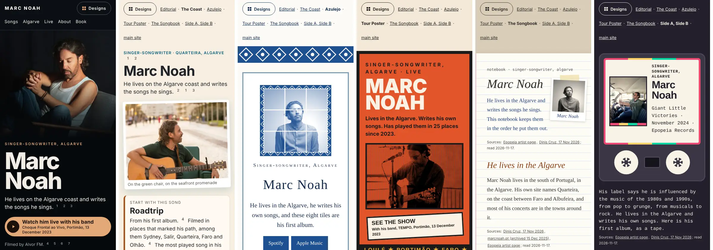
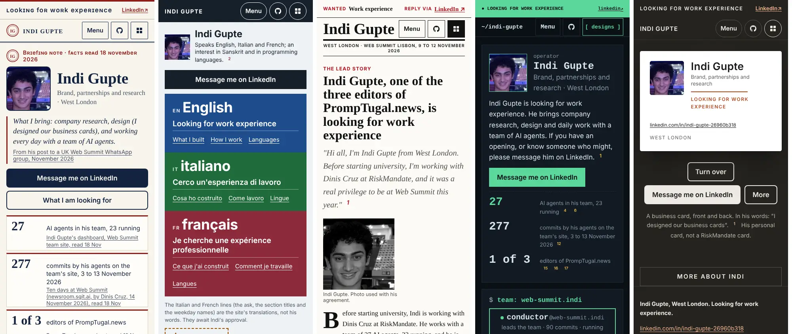
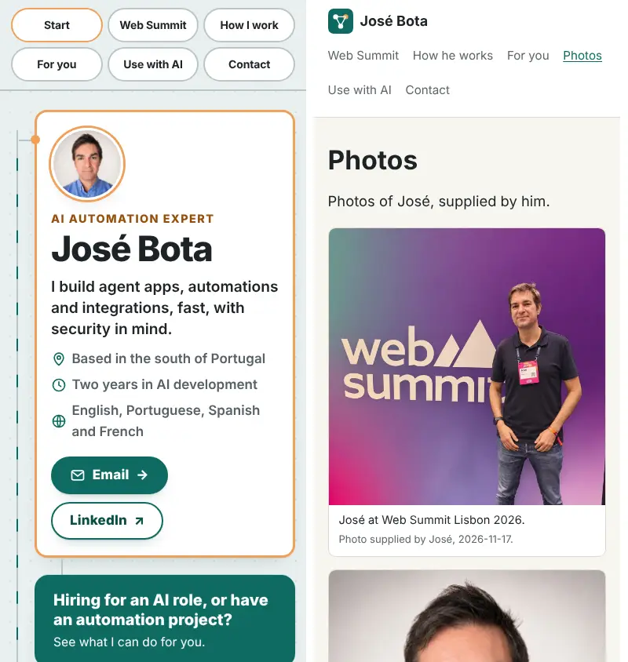
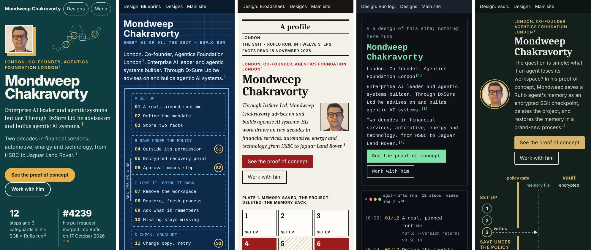

Synthetic users: four AgentiCCells people's sites, round 1
Sites: - Marc Noah, 25bb737 (v0.1.34); - Indi Gupte, 02a3172 (v0.1.17); - José Bota, 55213d6 (v0.1.24); - Mondweep Chakravorty, 1e71f30 (v0.1.19).
All four are at .agenticcells.site. Run:* 23 November 2026, about 16:00 UTC, by design.b.rounds. The review.
Method: Synthetic users. One agent per site played five personas, each in its own folder. The second persona was set for each site: - a gig booker for Marc; - an employer offering work experience for Indi; - a business owner wanting a process automated for José; - a client or employer for Mondweep.
These are simulations, and never replace a real person.
| Site | Look | Scores | Best design votes | Best part, in the personas' words |
|---|---|---|---|---|
| Marc Noah | 3.4 | 4, 4, 3, 3, 3 | Editorial 2, The Coast 2, Tour Poster 1 | "Editorial's photo hero and live-film button" |
| Indi Gupte | 3.6 | 4, 3, 3, 4, 4 | The Card 2, Front Page 2, The Briefing 1 | "Front Page newspaper lead story" |
| José Bota | 2.8 | 3, 3, 2, 3, 3 | (one design) | "the hero card with Email button" |
| Mondweep Chakravorty | 3.4 | 3, 4, 3, 4, 3 | home 2, Run Log, Broadsheet, Vault 1 each | "Vault's circular policy-gate diagram" |
Nobody said "wow" on any of the four.
Agreed, per site
- Marc Noah:
- Editorial and The Coast have the strongest first screens, on real photographs.
- The footnote numerals and repeated "Sources: ... read" lines clutter every design.
- Booking is clear only where the email sits beside the formats.
- Empty image frames and black video boxes look unfinished.
- The switcher takes about 140 px on a phone.
- Indi Gupte:
- The ask is clear and LinkedIn is easy to find.
- The footnotes are too heavy.
- The work is told through his agents ("27 AI agents"), so his own part is harder to see.
- The Card is the quickest read; Front Page is the most complete.
- José Bota:
- The hero card is the best part: a clear promise, his photo, three facts, and Email and LinkedIn on the first screen.
- Below the fold the page fades into grey low-contrast text and pale cards.
- The Web Summit photo is a black box on a phone.
- There is one design and no chooser.
- Mondweep Chakravorty:
- The site is about one proof of concept more than about him, and its terms are not explained ("SGit", "Ruflo", "mandate").
- "Work with him" is clear and honest.
- The doubled source superscripts are noise.
- The designs without his photo feel colder.
Below the fold
On all four, the first screens are real ideas, and below the fold one body, or two for Marc, is re-skinned. The exceptions, the parts that are their own: - Marc: the Tour Poster's date grid and the cassette's Side A and Side B; - Indi: The Card, which has no body at all, Console's agent chart and Lingua's trilingual headings; - Mondweep: Vault's policy ring and Blueprint's schedule table.



